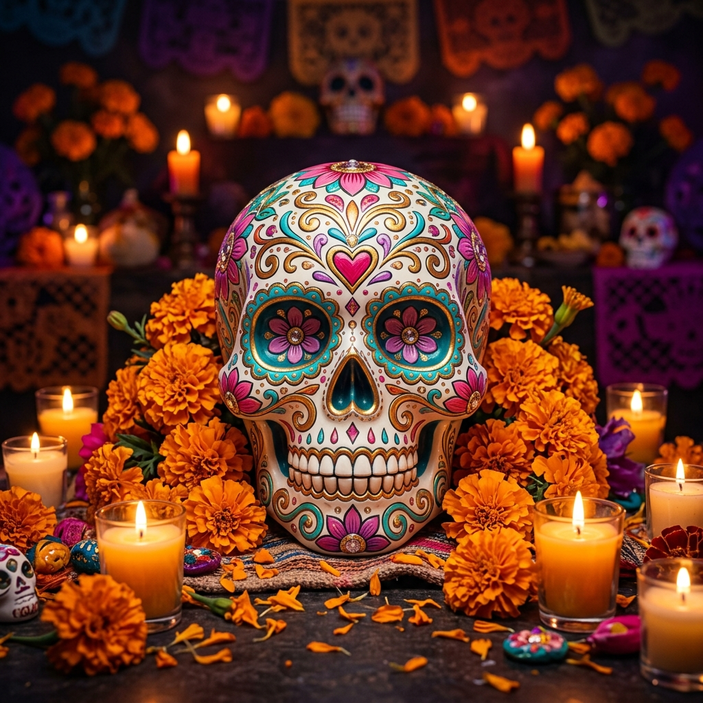

Cempoalxóchitl
Significado Místico:
El puente efímero de luz entre el Mictlán y nuestra morada.
Un festín para el alma, un lienzo de recuerdos,
donde cantan los vivos y brindan los muertos.

Cien pétalos de sol que en la noche destellan,
guiando los pasos de las almas que sueñan.
La "flor de veinte pétalos" guarda en su cáliz el calor del astro rey. En el México antiguo se creía que su aroma inconfundible y su color radiante trazaban el único camino visible para las ánimas que cruzan desde el más allá hacia la ofrenda.
El puente efímero de luz entre el Mictlán y nuestra morada.
Frágil papel que el viento acuna y mueve,
recordándonos que la existencia es breve.
Heredero del antiguo uso del papel amate, el papel picado artesanal se cincela con paciencia para dar forma a cráneos, cruces y flores. Se cuelga no solo para adornar, sino para detectar la sutil presencia de los muertos cuando el viento hace vibrar sus cortes.
La representación del elemento viento (Ehécatl) y la fragilidad vital.
Masa dulce rociada de azúcar y azahar,
con huesos redondos dispuestos a honrar.
El pan es una ofrenda fraternal, redonda como el ciclo de la vida y la muerte. Su bolita superior simboliza el cráneo del difunto, y los trozos que cruzan en forma de cruz representan tanto los huesos (huesitos) como los cuatro rumbos del universo prehispánico y las lágrimas derramadas.
El cuerpo del ausente que nutre el alma y consuela a los deudos.
Una sonrisa de azúcar, pintada con dulzor,
nos enseña que la muerte no causa temor.
Las calaveras de azúcar, amaranto o chocolate, a menudo llevan el nombre del difunto en la frente. Es una manera de burlarnos de la muerte, de devorarla de forma simbólica, demostrando que en la tradición mexicana, la muerte tiene un sabor dulce y se acepta con una sonrisa festiva.
El recordatorio amoroso de que nuestro inevitable destino puede ser dulce.